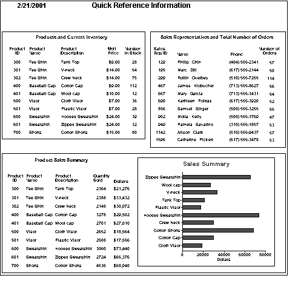
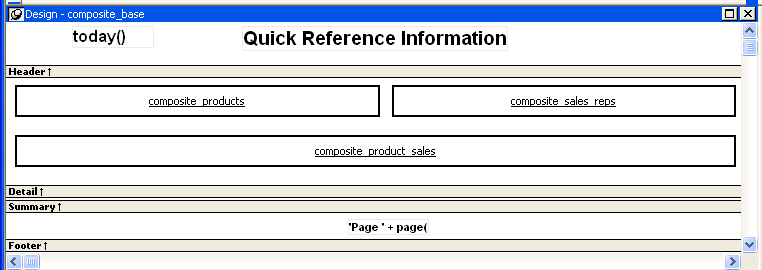
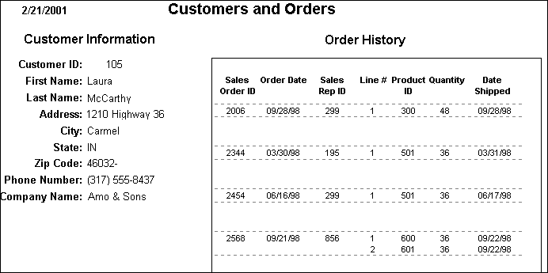
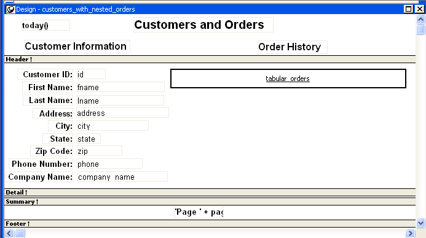

A nested report is a report within another report.
There are two ways to create reports containing nested reports:
You can choose the Composite presentation style to create a new report that consists entirely of one or more nested reports. This type of report is called a composite report. A composite report is a container for other reports.
You can use composite reports to print more than one report on a page.
For example, the following composite report consists of three tabular reports. One of the tabular reports includes a graph:

In the Design view, you see three boxes that represent the individual tabular reports that are included in the composite report. The only additional controls in this example are a title, date, and page number:

You can place one or more reports within another report. The report you place is called the nested report. You can place a nested report in any type of report except crosstab. Most of the time you will place nested reports in freeform or tabular reports.
Often, the information in the nested report depends on information in the report in which it is placed (the base report). The nested report and the base report are related to each other by some common data. The base report and the nested report have a master/detail relationship.
For example, the following freeform report lists all information about a customer and then includes a related nested report (which happens to be a tabular report). The related nested report lists every order that the customer has ever placed. The base report supplies the customer ID to the nested report, which requires a customer ID as a retrieval argument. This is an example of a master/detail relationship—one customer has many orders:

In the Design view, you see everything in the base report plus a box that represents the related nested report:

There are two important differences between nesting using the Composite style and nesting a report within a base report.
Data sources The composite report does not have a data source—it is just a container for nested reports. In contrast, a base report with a nested report in it has a data source. The nested report has its own data source.
Related nesting The composite report cannot be used to relate reports to each other in the database sense. One report cannot feed a value to another report, which is what happens in a master/detail report. If you want to relate reports to each other so that you can create a master/detail report, you need to place a nested report within a base report.
When you preview (run) a composite report, PowerBuilder retrieves all the rows for one nested report, and then for another nested report, and so on until all retrieval is complete. Your computer must have a default printer specified, because composite reports are actually displayed in print preview mode.
When you preview (run) a report with another related report nested in it, PowerBuilder retrieves all the rows in the base report first. Then PowerBuilder retrieves the data for all nested reports related to the first row. Next, PowerBuilder retrieves data for nested reports related to the second row, and so on, until all retrieval is complete for all rows in the base report.
For information about efficiency and retrieval, see "Supplying retrieval arguments to relate a nested report to its base report".
For the most part you can nest the various types of report styles. However, limitations apply to two of them.
Crosstabs You cannot place a crosstab with retrieval arguments within another report as a related nested report. However, you can include a crosstab in a Composite report.
RichText reports You cannot nest a RichText report in any way. You cannot place a RichText report in another report, and you cannot include a RichText report in a Composite report.